Dimerização
Definição:
A dimerização é o processo de controlar a intensidade luminosa de lâmpadas ou fitas LED, permitindo aumentar ou diminuir o brilho, proporcionando conforto visual, versatilidade de cenas e economia de energia.
Circuito (Tinkercad) - Dimerização com LED a partir de Programa Temporizado (dimerização a cada 100 ms):
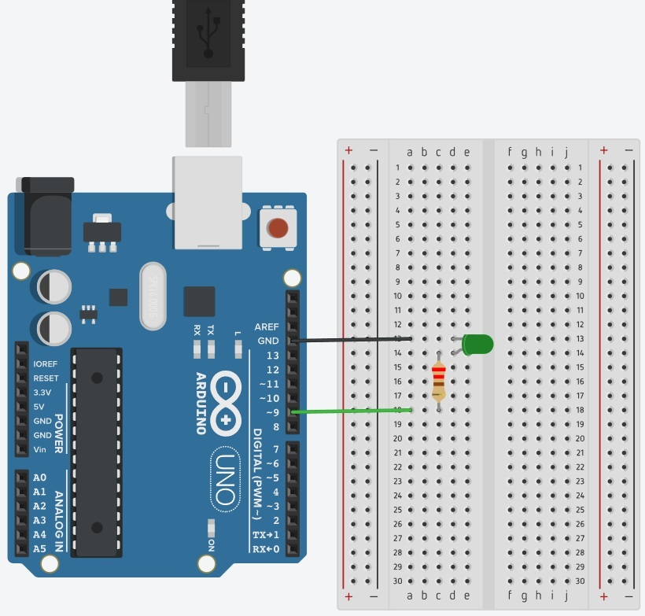
Circuito Físico - Dimerização com LED a partir de programa temporizado (dimerização a cada 100 ms):
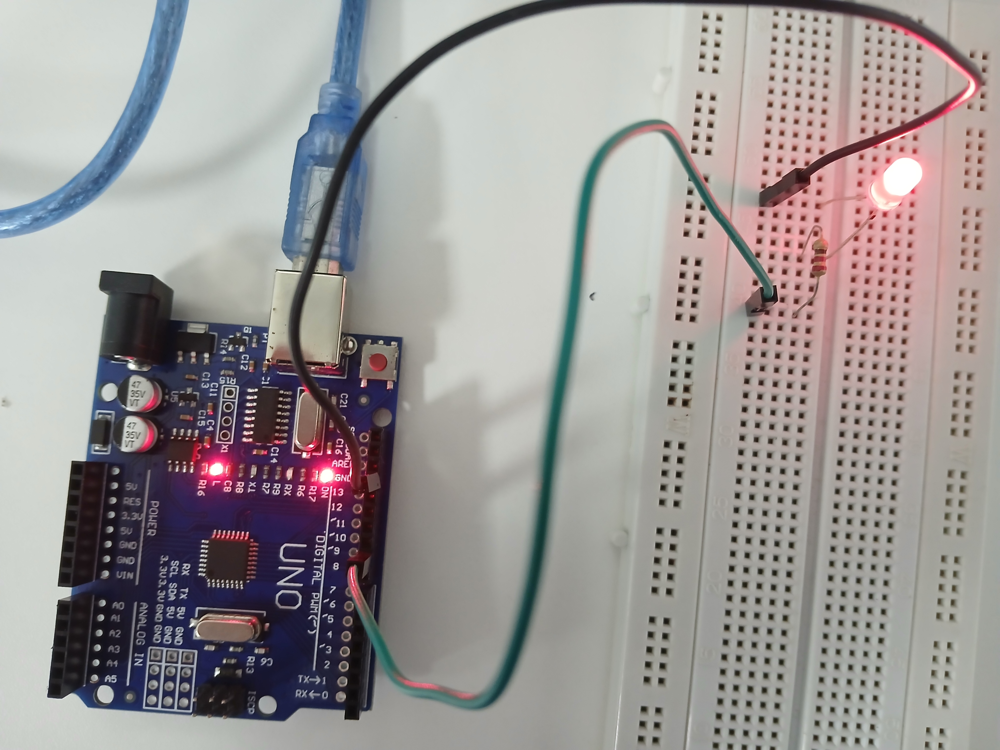
Circuito Físico em Funcionamento - Dimerização com LED a partir de programa temporizado (dimerização a cada 100 ms):
Código:
int saida = 9, incremento = 1, brilho = 0;
void setup() {
pinMode(saida, OUTPUT);
Serial.begin(9600);
}
void loop() {
analogWrite(saida, brilho);
Serial.print("Valor: ");
Serial.println(brilho);
brilho = brilho + incremento;
if(brilho <= 0 || brilho >= 255){
incremento = - incremento;
}
delay(100);
}
Circuito (Tinkercad) - Dimerização com LED a partir de comandos enviados por botão (do tipo push button):
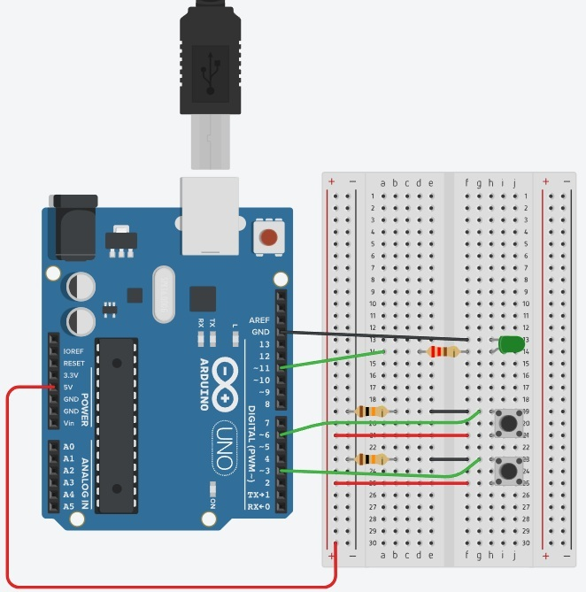
Circuito Físico - Dimerização com LED a partir de comandos enviados por botão (do tipo push button):
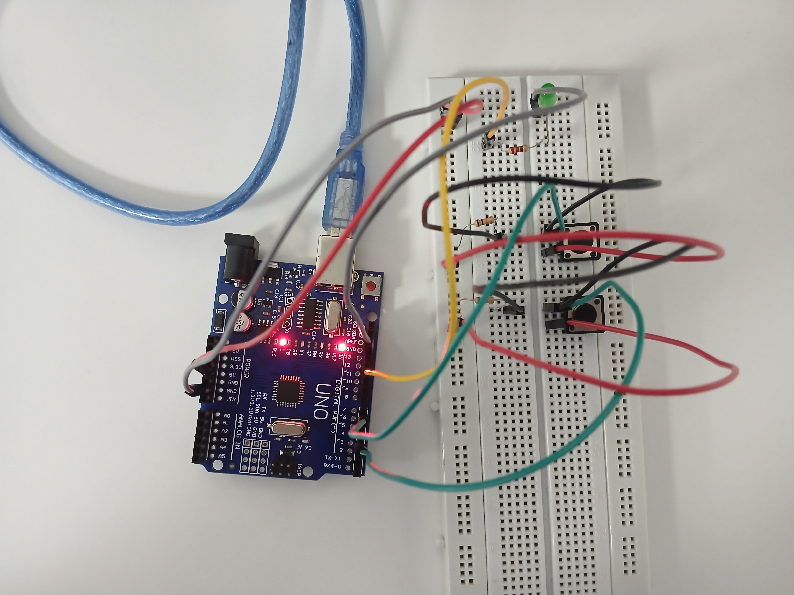
Circuito Físico em Funcionamento - Dimerização com LED a partir de comandos enviados por botão (do tipo push button):
Código:
int contador = 0;
int btp = 3, btpdois = 6, led = 11;
void setup() {
pinMode(btp, INPUT);
pinMode(btpdois, INPUT);
pinMode(led, OUTPUT);
// faça a leitura a cada 104 micro segundos
Serial.begin(9600);
}
void loop() {
if(digitalRead(btp) == HIGH){
if(contador <= 255){
contador += 5;
}
analogWrite(led, contador);
delay(50);
}
if(digitalRead(btpdois) == HIGH){
if(contador > 0){
contador -= 5;
}
analogWrite(led, contador);
delay(50);
}
}
Circuito (Tinkercad) - Dimerização em Saída analógica (PWM - para 255 e 127) para LED:
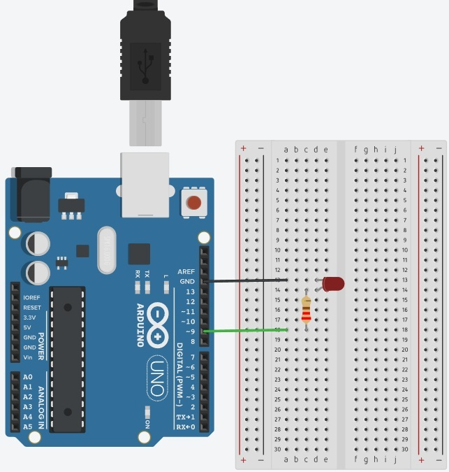
Circuito Físico - Dimerização em Saída analógica (PWM - para 255 e 127) para LED:
Medição (Tensão Total - Multímetro em 20 V) Circuito Físico - Dimerização em Saída analógica (PWM - 255) para LED:
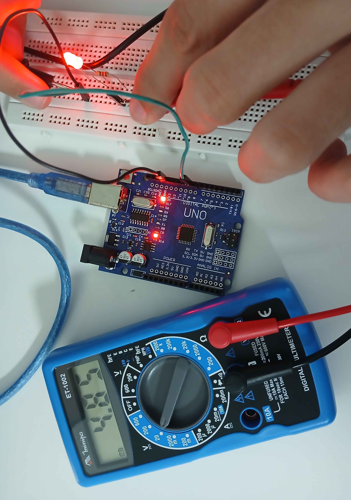
Medição (Tensão Total - Multímetro em 20 V) Circuito Físico - Dimerização em Saída analógica (PWM - 127) para LED:
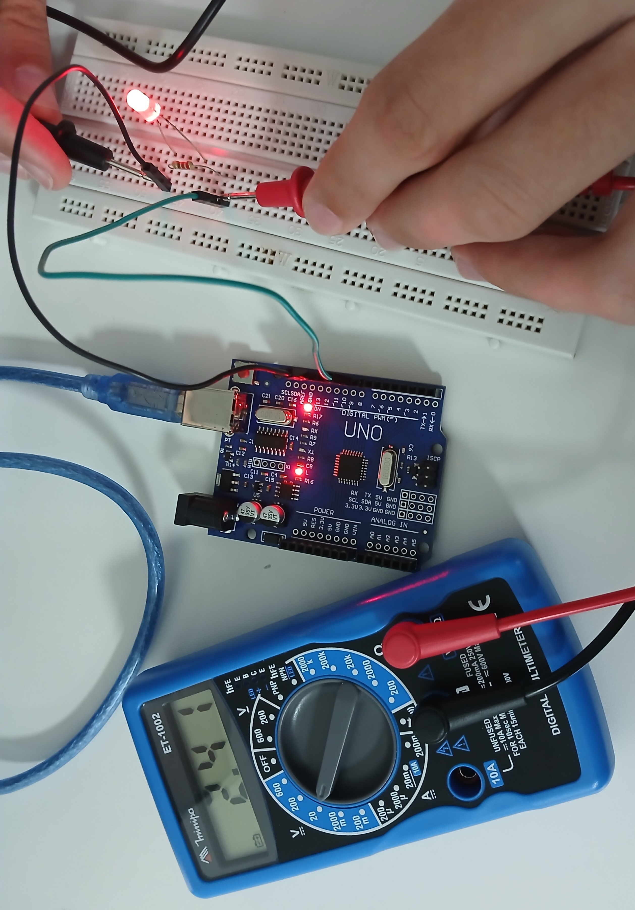
Medição (Tensão do Resistor - Multímetro em 20 V) Circuito Físico - Dimerização em Saída analógica (PWM - 255) para LED:
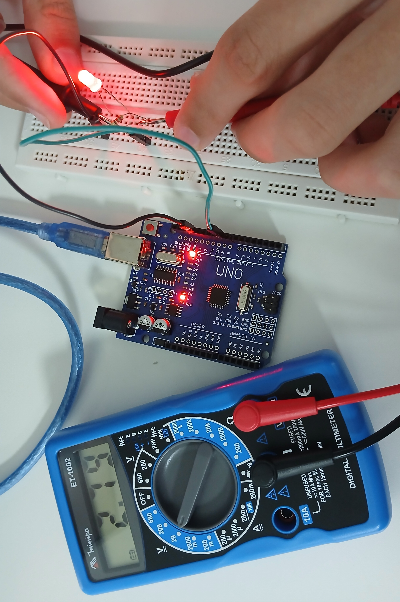
Medição (Tensão do Resistor - Multímetro em 20 V) Circuito Físico - Dimerização em Saída analógica (PWM - 127) para LED:
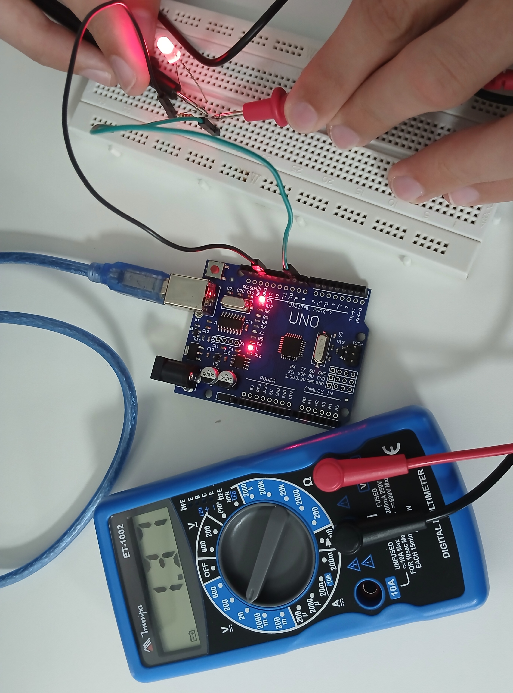
Medição (Tensão do LED - Multímetro em 20 V) Circuito Físico - Dimerização em Saída analógica (PWM - 255) para LED:
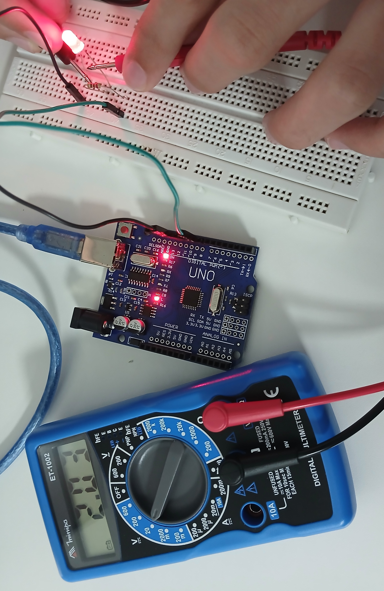
Medição (Tensão do LED - Multímetro em 20 V) Circuito Físico - Dimerização em Saída analógica (PWM - 127) para LED:
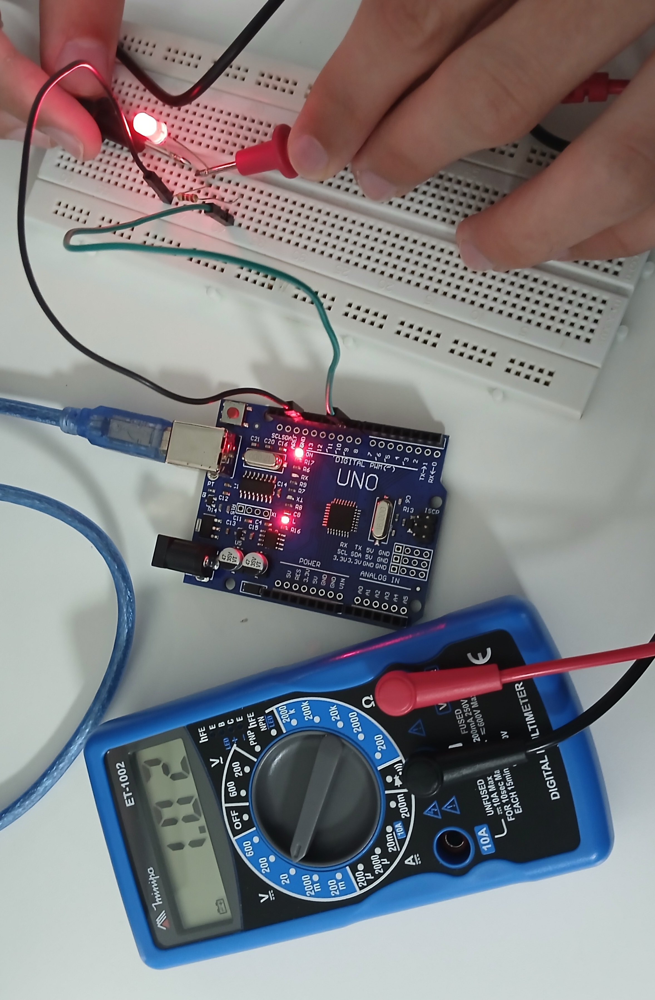
Medição (Tensão do LED - Multímetro em 2000 mV) Circuito Físico - Dimerização em Saída analógica (PWM - 255) para LED:

Medição (Tensão do LED - Multímetro em 2000 mV) Circuito Físico - Dimerização em Saída analógica (PWM - 127) para LED:
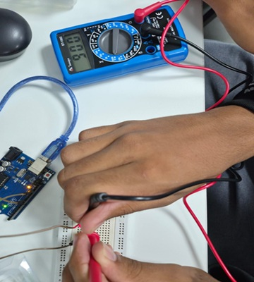
Código - Circuito de Dimerização em Saída analógica (PWM - 255) para LED:
int led = 9;
void setup() {
pinMode(led, OUTPUT);
}
void loop() {
// 255 equivale a 5 V
analogWrite(led, 255);
delay(10);
}
Código - Circuito de Dimerização em Saída analógica (PWM - 127) para LED:
int led = 9;
void setup() {
pinMode(led, OUTPUT);
}
void loop() {
// 127 equivale a 2,5 V
analogWrite(led, 127);
delay(10);
}